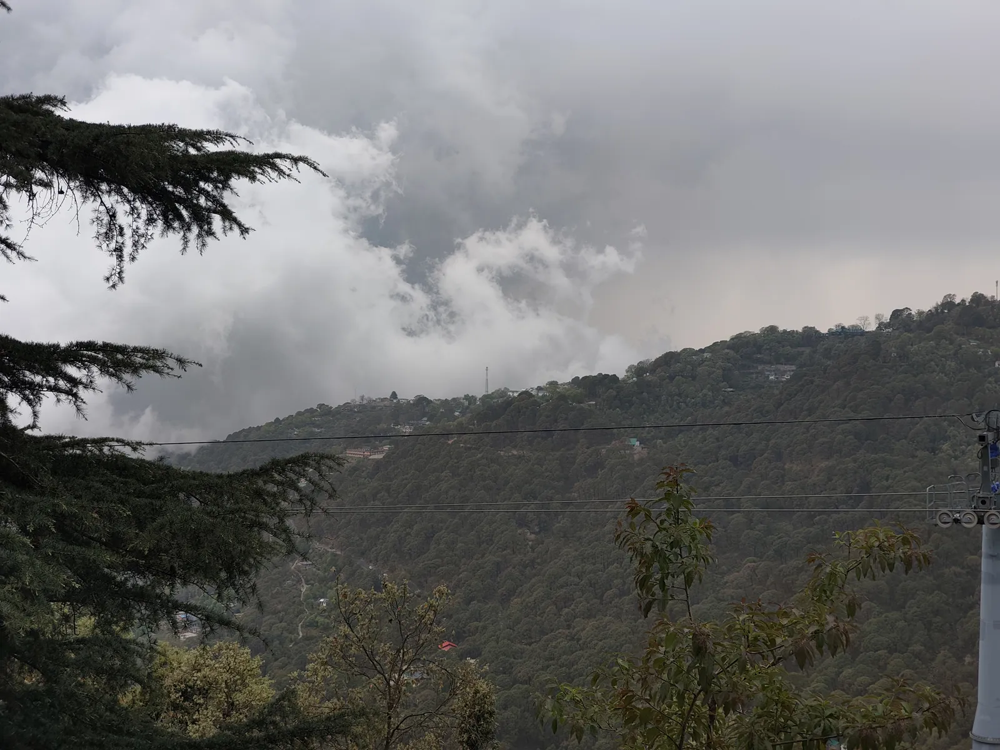
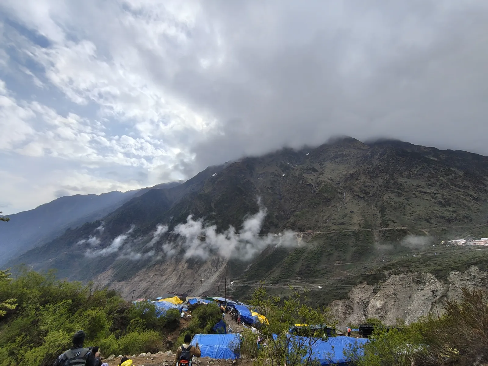

Love playing with the intricacies of language so, professionally, I am a computer
programmer; leisurely, a ravenous reader; and occasionally, a withering writer.
Philosophy
Intellectual masturbation.
Due to my limited vocabulary, I'll call it Whateverism:
A life constituting most, if not all, that existence has to offer: a beginning rooted in learning, a journey of
seeking knowledge, and an end seasoned with wisdom.
In between: joy and depression, tragedy and loss, love and hate, mercy and acceptance. Some failure, a few
rejections, more success, with equal reflection.
To have experienced it all with open intentions; the heights and the hollows, the mid and the mild, the
some, the all, the none, and the void.
In the end, meet the ending not as a last resort, but with graceful acceptance.
As a clever adage goes: if you had to live the same life on repeat, would you dread the encore?
One must truly have a life, not just an existence, to delightfully say, “Once more.”
To conclude, I'd say the purpose of life is to truly live; for a life well-lived is worth dying
for.
Profession
A mode that earns a living.
The Beginning
The year was 2014, high school, Intro to computer programming with C++. It
was one of those things that just clicked without much deliberate honing. Never felt like a chore, rather, a
better source of entertainment than video games, which were, at that time, one of the highest outlet of
adventure and play.
The Opportunity
In 2022, landed my first job as a Full Stack Web Developer. The pay was modest and the
benefits were few, but the sheer pleasure of being paid to write code outweighed it all.
The Journey
Currently, a Senior Software Developer within an R&D team where the days are spent
hopping between tech stacks, projects, and evolving responsibilities. Chasing the same language intricacies,
creativity and playfulness that drew me to coding in the first place.
The Milestones
Meritech April 2025 – Ongoing
Manufacturer of Mobile Network T&M, Network Optimization, IoT and Edge AI
solutions.
Python scripting, PHP web development, DevOps, Golang and Rust based backend
services development, Flutter + Rust application development
Worked across multiple cross-functional projects to develop and maintain backend services, optimize
Linux servers, and manage containerized environments utilizing Docker, Docker Compose, and Docker Swarm
alongside FastAPI and Go and Rust based API services.
R&D and implementation of an AI-powered network troubleshooting agent, Sigma-NEO, automating the analysis
of Android-generated RF logs to swiftly pinpoint root causes of cellular quality degradation.
Designed a modular, provider-agnostic integration layer for leading LLM services; employed advanced
orchestration patterns including Model Context Protocol (MCP) for local data context,
isolated Sub-Agent linear networks, and discrete data analysis tools engineered to
eliminate the uncertainty produced by pure LLM analysis.
Lead a multi-phase system rewrite of a cross-platform Flutter client, employing a strict decoupled
topology (Orchestration → Backend → UI) to enforce deterministic domain logic separate from
execution layers. Designed transport-agnostic routing abstractions bridging local MQTT broker control
planes with alternative physical paths—including LAN, Wi-Fi, and ADB port-forwarding
pipelines—ensuring 100% local-first operational guarantees before layering remote multi-tenant RBAC
profiles.
Opticode Technologies March 2023 – March
2025
The company develops B2B and B2C software solutions, specialising in GST and tax
related software for CAs, as well as business management tools for enterprises.
Developed a comprehensive invoice print generation system, allowing users to design, edit, print, and
download invoices as PDF or Excel files with both predefined and customized templates.
Built an optimized Excel data processing service, enabling validation, correction, categorization, and
storage of data using parallel worker threads in Node.js, leading to a 40% reduction in data processing
time.
Designed and implemented a robust multi-tenant database backup and restore system, ensuring 100% data
integrity while allowing clients to manage their own backups securely.
Developed a JWT-based authentication system with role-based access control (RBAC), empowering admin
users to create, assign roles, and grant access efficiently while maintaining a secure, hierarchical
access structure.
Designed and implemented various REST API using ExpressJs framework for NodeJs.
Predilections
Borderline addictions.
Philology
An amusement found in playing with the intricacies of languages.
Wordsmith
Wordsmith
No, I’m not
but do aspire to be,
sculptor of thoughts
engraved in syllables,
not just mine
but of all proximal thought purveyors.
Some call me an ice-cold dagger,
coal-sludge in hearth’d veins
when bleeds, paints pictures niger,
dissolving dark disdain.
It’s true what they say,
I AM Perfectly Profane,
prefer precision strike slicing something deep
that belongs,
rather than overwrought swear words to slay or
cliched slangs.
Yet despite the cold heart & fork tongue
purpose is not to scar with these lexical
shenanigans
but to word with each line and clever phrasing
different layers of the dead decaying rotten
fibres of my Being.
Being of an artist, an artist of the mind
fingers drenched in blood, eyes blind,
carving soul out of shadow
shedding light on shades of the psyche
as breathing prose & synchronous syllables
trapped inside me.
These poems, nothing but a game, an amusing
outlet,
and the poet, a jester, who paints with dark pallet.
Yet don’t be thinking now you know me
thus hold on & delay your delusional delight,
for you’ve only read me in the dark
and have seen me at night…
The Modern Maze
The world we live in, there's too much noise.
All it takes is just a few gestures of our
finger's tips and we wander off to a world
that got nothing to do with us or our life
and yet,
we end up losing ourselves in it,
in that world.
It's almost as if we all are navigating
through a maze
where every path that we don't take,
stares at us as if it's mocking us for
walking too straight,
for not letting ourselves wander as if we are
trapping ourselves in our own cage.
Strom within
On this chaotic night,
when the storm outside matches the storm within,
the wet window glass and the smell it brings in,
the petrichor,
the aeolian noises caressing the callous skin,
the moon battling the dark clouds for its place in the
sky,
the stars nowhere to be seen.
How can I miss it all?
Shouldn't I sacrifice my sleep?
for it's been a while since I've met another
who resembles what I've been.
Am I?
Swirl of wind, a leaf on my lap,
The season is changing, says the leaf
as if it's asking, 'are you?'
Heart ach, it knows it's deed
and deeds of the forgotten future,
looking for the answers,
asking to myself, 'am I?'
The autumn leaf
Time to leave,
says the autumn leaf.
As off she floats
to chase the zephyr,
the evanescent breeze.
Reverie
Looking out the window
warmth of sunrays soothing a winter within.
They say there's life in them, in those rays
yet no amount of life can warm the cold
death within.
So the mind plays a trick
a trick not to see what's in front of it
but to see what it wants to see.
But why?
Why conjure up a deception to get deceive?
Is it looking for what it desires
or is it missing something that it had already
once perceived?
Frivolous love
She needed his love
to remember all the reasons
why she deserved to be loved
and being in love
he has given all the reasons he can
not knowing
it'll never be enough.
Metamorphosis
Dancing to the melodies of these melancholy music, seeking liberation from
liberation,
in other words- craving subjugation.
Better to be walking on the wrong paths than to not move at all,
better to die daring than to die daily to the thoughts of it all.
Yes, death is the purpose of living,
death is the most fulfilling.
This sickness of mine,
cure for it is not a will to live
but a cause worthy of dying for.
Tired of being patient,
putting together bits and pieces,
of seeing all that's fault in all,
of lacking the fatal fanaticism to devote my all,
and be again what I was,
be Nothing
The Moon- a Man
The moon-
Part and parcel of perpetual
progression,
an orbital swath,
time and tide,
eternal companion.
Born of colossal impact,
partial obliteration,
coalesced and concentrated,
astral aggregation.
Many shades
familiar face
planetary pirouette,
crater and dents
for embellishments.
-A man.
An early morning jest
This one- a parable,
a saga of cosmetic deception
on my inebriated aesthetical
perception.
A sober expression of a cruel infliction
by none other than my own
predilection.
Eyes opened with sound of birds
chirping
while sunshine flirting with the curtain,
lips smiling as they remember the last
night
for it has blessed by a seraphic sight,
fingers rowed away strands of her
ruffled hairs
as sculptor gives shape to his
masterpiece-
gentle and fair,
petaled by waves of those tendril
hair has now emerged that face, sunlit,
from lair,
so emerged, in mind, words of a wise
man, putting a smile- smugly,
"No one is that beautiful that under
certain conditions, they can't look
ugly".
Burden of Beast
There's a monster inside I keep on a leash,
a behemoth of pride that feeds on the peace,
ever ready to exact vengeance,
machete deadly attacks endless.
Have nothing to fear but fear itself,
when chaos is near, peers into hell.
There lies the beast I know too well,
he asks for release and deceit compels.
Went nearly insane to chain up the serpent
contained is the key but also my burden.
Bee
Had no clue what she was saying
her words, derailing
rhythm, wailing.
Said, "have no idea what am I doing",
her expressions, complications brewing.
By now it was clear
she was drunk,
sunk
into that devotion of erosion,
a self-loathing implosion,
sluggish emotion,
mental commotion.
But she had an inkling what's happening,
whispered sanely, "I'm maddening",
then again goes mumbling,
babbling fumbling.
Bumbling like a wounded bee
wings broken, struggling to flee.
Was belligerent towards helping hands
find them repulsive,
rattling, stings, impulsive.
Yet it was none of my business
it's her life she was gambling,
for me, just another chick rambling.
Miss Cigarette
Hey Miss Cigarette,
let me get you alone,
set you on fire,
put you where you belong.
They say you're lethal
many men's end, demise,
like the soul of the Siren
hiding under an alluring disguise.
I say, so is Life,
it's the biggest cause of death
for no matter what a man does
her charm kills him in the end.
She is one of those
who wants you to conquer,
make her submit
then take pleasure of her.
But you, are one of very few,
who desire no conquest,
just smoulders her soul,
dissolves it into her master.
Thus why won't a man choose you over her,
for you provide pleasure, unlike her torture,
before the end of the Life's chapters!
Ascendance
I was raised to be a saint
and saint fails to make it in the garden.
Became a sinner,
but the conscience kneeled everyday to be pardoned.
So I murdered the tick of this conscience clock,
counting every recoil of this sinner's glock,
created a monster, organized my demons,
created my own hell 'cos heaven isn't for heathens.
I spread Rage for Love
for they're too naive to see boredom might equal peace.
Conditioned them to believe chaos belongs to passion,
as they seek drama for release.
Head's up, this isn't poetry that you read,
it's a proclamation of damnation of wannabes.
The saint has fallen,
has risen the devil with wings.
And this isn't the ending, rather a beginning of the end,
of the war on being human that has just begun.
Frenemy
With a friend like me
you don't need enemies.
I'll scar you in all the ways
that I deemed worthy of you to heal from,
crumble your every hope
that's making you blind about your own strength to
overcome.
Blind your eyes
that looks up to the sky
and say you can't fly,
mutilate your tongue
that mouths you can never be the real thing
so you might as well pretend.
Incinerate incredulous innocence
against becoming that which you admired once,
decimate dissolved dubium
morph-mutate-seminate them in you as devotion.
dismantle the dread & dismay
that got you praying on your knees,
for I'm not an angel sent here to help
but the devil who's going to set you free.
So that the next time,
you don't wait for someone to come and rescue
but look in the sadistic eyes of life and smile then say,
'just a minute, shortly I'll be off with you'.
Peregrination
Indulging in unfamiliar chaos, pursuing proximal peace.
From the stillness of tranquil mountains to the chaos of tumultuous cities, I am a perpetual wanderer,
forever at ease.


Poiesis
Artifacts of curiosity.
Building solely for the sheer “high” of creation in the moments when an abstract concept becomes a
physical codebase.
A terminal-based wallpaper manager that displays wallpapers in a grid, allowing users
to select and set wallpapers while automatically customizing application color themes based on the chosen
wallpaper.
js is a lightweight command-line utility that brings the simplicity and
readability of a modern scripting language over cryptic and numerous syntax for different tools like awk,
sed, jq, etc to your terminal commands.
A physical outlet for the drive to excel, an excuse to fight off the degeneration
of aging.
Calisthenics
Table Tennis
Swimming (On the horizon)
Phronesis
The side quests of curiosity.
Apart from tech, I'm always on a side-quest to understand that which I didn't before. This has taken me into
the realms of philosophy, psychology, and cognitive science.